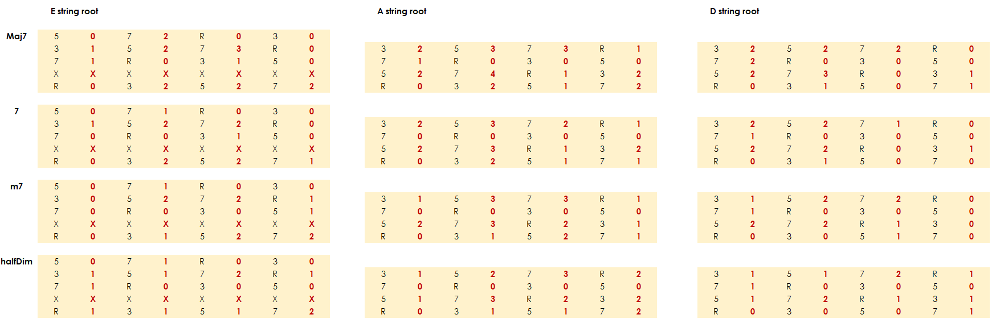
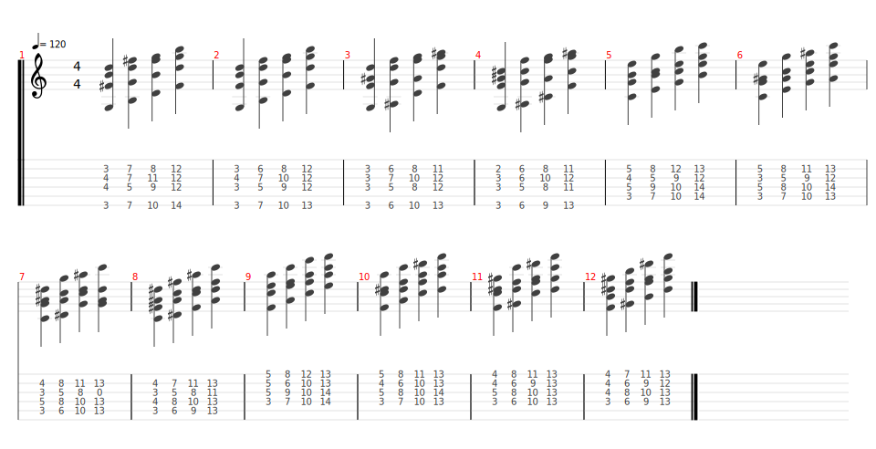

Practising chord inversions; that's something that I just didn't know how to begin doing. Tackling another exercise however gave me a way in, and that was single string scales.
We often don't but it is as possible to play a scale or arpeggio along a single string as it is across all of them. It's a great idea anyway as it encourages movement up and down the neck. Not only does this change your tone, it also looks cool! Another huge advantage of approaching scales this way is that you need to play them more consciously, thinking about note spacing (in tones, semitones or more). Really anything we can do with practice that makes us THINK is a great idea. Humans are very good at muscle memory and learning patterns, but we shouldn't get trapped in them.
The biggest issue when practising chord inversions is where to FIND the chords. This is because rather than just thinking "find a G chord" for example, we're looking for either the 3,5,7 or something else to put in the bass, from which to build the rest of the chord. To ease the difficulty a little, but still keeps us thinking, I propose the following pattern for learning chord inversions in a series.
If you want to check your thinking or avoid some donkey work (although I recommend you manually run this process for every chord you know), here's a cheat sheet. A note on my fingering (in red); I have shown a generic pattern for the chord shape as if each chord is first position. Your own will, of course, ascend the neck.
Just to make sure you are totally getting this, here are some results of inverting major, dominant, minor and half diminished seventh chords. In this example I've worked from the 3rd fret for E, A and D string, giving G, C and F chords of the different types.
So how do I propose using this process? Well, I'm using it a little something like this. Every practice session I'll pick a key. I'll play each chord in the key in first position, followed by its inversions. For example C major 7 then its three inversions, D minor and its three etc...
Obviously this page doesn't cover EVERYTHING. But I hope it gives you a way to approach exploring chord inversion for ANY chord. I've chosen seventh chords for illustration as they form the basis or skeleton of most extended chords. You can use my process though to invert suspended chords, extended, slash or whatever you like! You might find that doing so actually gives you some lines to use in songs. It's a common phenomenon in jazz to use strings of inversions in chord melody. Have fun, experiment!